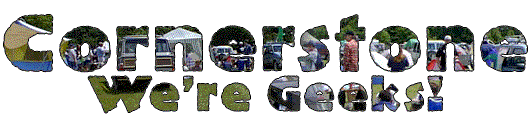
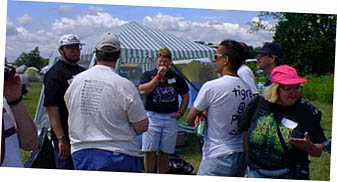

|
 |
 |

| Cornerstone: Welcome!
It's more than a music party -- Tucked behind the underground tent is Cornerstone's ArtRageous and Imaginarium exhibits. Authors, painters, and others of a creative bent can enjoy conferences, discussion, and great coffee. The midnight film festival was cool, too...
So much music, so little time... Sob! Here's a peek at some of the cool stuff I stumbled across over the course of the festival. Some oldies and some fresh stuff -- no matter what the genre, it's hot stuff.
Follow the adventures of Squeaky the Duck on his adventures at the fest. From his near-death experience at the hands of Kevin131 to a DC Talk sighting, he's been almost everywhere.
Well, T-shirts, too. Cornerstone is a great place to find a variety of wacky hairstyles, and most of the owners are good natured sorts who're quite willing to offer their coifs for a good cause -- this page, for one!
We're Geeks, Not Nerds What do you get when you put a bunch of music-obsessed usenet junkies in one place? Vibrating hairrushes. That's what. The fourth annual RMC Cornerstone picnic is here, captured in bits and bytes for all of posterity...
Whether it's beating the heat, finding munchies, or selecting that perfect camping site, there's someone who's been through it and has some words of wisdom to offer. Recorded here for posterity are essential Cornerstone survival skills.
|
Rec dot Music dot Christian: the official online water cooler for fans of Christian music, from the mainstream to the obscure. Over the years, this newsgroup (commonly referred to as 'RMC') has become home to a twisted extended family of music fans who use it to hang out, chat about various topics, and rant about the evils of fluffy pop music. Cornerstone festival is, of course, a natural gathering place for this odd bunch. The RMC Picnic has been a long-running Cornerstone tradition, gathering net.folks from all over the world to a celebration of geekiness and musical excellence. I'd missed last year's RMC picnic, by ten minutes no less. This year, my luck was better and I hooked up with the assorted RMCers on friday afternoon to catch the tail end of the picnic. Nametags were in abundance, though very few were worn in the traditional manner, and news of various artists playing the fest dominated discussions. Familiar RMC faces like Bev White (RMC's former FAQ mistress), Ed Rock (Abbot of the Monastic Order of RMC and general clueful person), Sheri Lloyd and Linda Stonehocker (Editors of the Phantom Tollbooth E-zine) were all in attendance, as well as Jeff Elbel, the artistic innovator behind Sunny Day Roses. This year's Picnic Contest promised fame and fortune (or at least a congratulatory post) to the person who brought the "Weirdest Thing" to Cornerstone. Terry, RMC's resident master of sattire, was present, and his brother Linc was sure to win top honors with his can of pork brains -- as expected, there were no takers on the offer for a taste. But Bev White and Lisa Reid (seen above, wearing Terry's name tag) made a last-minute effort as write-in candidates, demonstrating their Vibrating Hairbrushes of Doom to awed onlookers. Apparently, they had stopped at Wal-Mart on the way, and decided that they could take the contest by storm if they brushed the hair of every judge. Don't ask. The picnic wound to a close as the Dime Store Prophets set started at a nearby stage -- only a handful were willing to miss THAT show. The few who remained shared a pleasant hour of conversation. Topics including accounts of deranged college roomies, how to show love to others when they're flaming you online, and the best ways to work Monty Python references into everyday discussions. Viva la RMC!  |
|
|
|